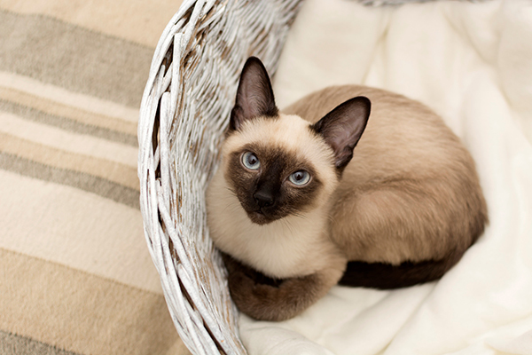

Породы Котов
На этой странице вы найдете информацию о различных породах котов.
Британская короткошерстная
Британская короткошерстная кошка — это одна из самых популярных пород в мире. Они известны своим спокойным характером, мягкой шерстью и крупным телосложением. Эти коты отлично подходят для жизни в квартире.
Сиамская кошка
Сиамские кошки отличаются своим элегантным телосложением и большими ушами. Они очень социальные и любящие, и зачастую сильно привязываются к своему владельцу.
Мейн-кун
Мейн-куны — это одна из самых крупных домашних пород. Они обладают пушистой шерстью и кисточками на ушах, что придает им облик диких кошек. Мейн-куны очень дружелюбны и ласковы.
Бенгальская кошка
Бенгальские кошки имеют яркую пятнистую окраску, напоминающую леопарда. Они очень активные и любят играть, что делает их идеальными для активных владельцев.
Абиссинская кошка
Абиссинцы известны своим уникальным "тиккингом" на шерсти, благодаря которому каждая шерстинка имеет несколько оттенков. Они очень энергичные и любопытные, всегда ищут новые приключения.
Персидская кошка
Персидские кошки легко узнаются по своей длинной шерсти и приплюснутой мордочке. Они спокойные, любят комфорт и требуют регулярного ухода за шерстью.
Сфинкс
Сфинксы — уникальные кошки без шерсти, что делает их подходящими для людей с аллергией. Они теплые на ощупь и обладают высоким интеллектом и дружелюбным характером.
Рэгдолл
Рэгдоллы получили свое название благодаря способности расслабляться, как тряпичная кукла. Эти кошки известны своим спокойным характером и любовью к хозяевам.